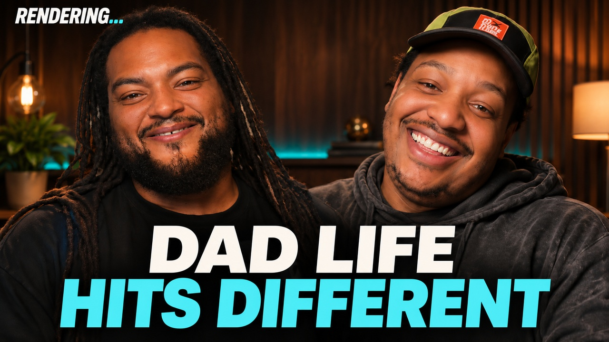

RENDERING…
PILOT · REVIEW V04
Fatherhood, Fellowship & Finding Your Frequency
Cory Crawford × Michael Turner · Third Layer Ops · November 4, 2026
Opens the private Drive player in a new tab. Sign in with the Google account granted video access to watch or download.
Conversation chapters
Copy a timestamp to reference in your review. Use the Drive player to seek.
YouTube thumbnail · Draft 03



1280 × 720 · AI-assisted design from episode stills · Eyes revised
Guest review
Your episode review copy
Open Michael’s Drive reviewVideo and captions require the Google account approved for this episode.
Episode files
Use your approved Google account for the review video and captions.
YouTube metadata · For review
YouTube title & description
Proposed title
Dad Life Hits Different | Fatherhood & Finding Your Frequency ft. Michael Turner
Proposed description
What changes when you become a dad and start setting the rules for your own family? On this episode of Rendering…, Cory Crawford sits down with Michael Turner, founder of Third Layer Ops, to talk fatherhood, family boundaries, and finding people you want to build with. They swap Halloween stories, get into how to accept help from grandparents while holding the line as parents, and talk about Black ravers, festival culture, and GRiZ’s Valley of the Seven Stars. They close with what happens when networking turns into fellowship and how OTV and Third Layer Ops came together. Chapters 00:00 Intro and welcome 00:40 Halloween & fellowship 07:16 Fatherhood & family boundaries 23:33 GRiZ & Valley of the Seven Stars 26:38 Black ravers & festival culture 36:37 Community, accountability & perspectives 48:33 Finding your frequency 1:03:05 Building together Subscribe to OTV Network for more Rendering… conversations.
Shorts · OpusClip
Shorts from the conversation
Open the episode’s OpusClip project to review the short-form clips.
OPUS PROJECT LINKED